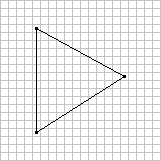
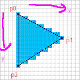

Shader 编程自救指南
Table of Contents
由于去年换了工作, 生活变得充实起来了, 这里的充实并非反话, 我在这段时间调整了心态和目标, 学习了一些新的知识;
为了学习游戏开发, 定制了新的学习目标, 包括音乐, 编剧, 使用 Blender 建模以及 Godot 的使用等等;
同时由于工作繁忙的原因, 图形学学习计划搁置了一年, 当时就停留在贴图映射的阶段.
另外搁置搁置还有一个原因, 那就是当时在学习贴图映射时所在的参考书有点不太易懂,
所以需要找一本更易读的书, 我找到了 Computer Graphics from Scratch, 但这本书当前还没完成编写 (其实 21 年就写完了), 因此决定等它出版了再继续学.
虽然这篇文章名字叫做 Shader 编程自救指南, 但主要是介绍 Shader 程序是如何工作的, 主要涉及渲染管线的一些细节以及 OpenGL/WebGL 的概念和 API.
与 Shader 编程本身没有太大的关系, 有点类似与学习编程语言和学习编程之间的区别, Shader 编程的重点是图形学内容和数学技巧, 之后会单独写一片文章来介绍这一块.
PS: 现在是 2023 年 12 月, 从今年的 6 月份才发现这本书已经写完了, 于是平时抽空一点一点地读了半年, 终于读完这本书, 期间使用 C 语言按照书上的伪代码实践了一遍.
个人感觉等待这本书的完成是一个正确的选择, 它指导了我编写两个完整的渲染器, 简单易懂地解释了图形学里面一些较为复杂的算法.
我本人在读这本书之前就已经较为深入地学习了一些 数学细节 以及 OpenGL的渲染管线,
在跟着书本实践时特地找出这些知识和实践的对应之处, 学习效果非常地好.
这本书清晰了我在学习渲染管线时的一些迷糊之处, 而之前所学的数学细节以及渲染管线知识又很好地弥补了这本书在这方面的空缺.
现在回过头来看 Shader 程序如何运作时, 很多东西都豁然开朗了.
Shader 是如何工作的
为了了解 Shader 是如何工作的, 我们将从最简单的 WebGL 开始上手,
WebGL 和 OpenGL 的工作方式基本上是一致的, 主要区别在于对工具的要求上,
WebGL 只要求掌握一点 JavaScript/HTML 就可以了;
而对于 OpenGL, 很多教程都是要求读者使用 C/C++ 来完成的, 而使用 C/C++ 又掌握如何使用编译器以及 makefile/cmake 这样控制编译连接的工具的使用, 不是简单的事情.
要想了解 Shader 如何工作什么的, 其实和了解 OpenGL 是一样的, 离不开对渲染流程的了解.
开发人员所关心的 Vertex Shader 和 Fragment Shader 就是整个渲染流程里其中的两个环节.
我一开始是找了关于这块不错的教程来进行学习:
WebGL Fundamentals 的 WebGL是如何工作的
WebGL2 Fundamentals 的 WebGL是如何工作的
但很快就发现一个问题: 初学者只看这两个阶段的话其实就是在断章取义, 是难以理解它们是如何工作的, 特别是 Fragment Shader, 看别人的 Shader 还是一头雾水.
回过头去看官方的 渲染流程概览, 又发现里面的内容不太好理解, 于是乎决定把它们结合在一起进行理解, 接下来就是个人理解了.
在这之前要了解一件事情, 随着 OpenGL 版本的变化, 渲染流程时会发生变化的, WebGL 也是一样.
因此, 这篇文章里面的例子只关注特定版本的 WebGL: WebGL 1.0, 它对应的 GLSL 版本是 1.20.
由于历史原因,
OpenGL/OpenGL ES/WebGL和GLSL之间的版本对应关系挺混乱的, 幸好维基百科上有列出对应关系.如果不了解这一块的话, 你无法知道你的
Shader程序能够运行在什么环境上的.
接下来着重介绍 Vertex Shader 和 Fragment Shader 及其前后的几个阶段.
Vertex Shader
Vertex Shader 根据几何数据(geometry data)计算出裁剪空间(clip space)的顶点坐标, 也就是投影坐标.
所谓的几何数据就是指顶点数据, 这些数据来自于 CPU 程序的上传(后面会详细介绍), 每当接收一个几何数据, Vertex Shader 就运行一遍,
如下图所示:

Figure 1: Vertex Shader 对顶点数据进行处理 (图片来源于上述链接)
由于 Vertex Shader 可以自定义, 所以该计算过程不是固定的.
一个顶点数据并非只有一个顶点坐标, 还可能有顶点颜色, 顶点法线以及顶点贴图坐标等等.
Vertex Shader 要做的事情只有两件:
- 把
gl_Position的值设置为裁剪坐标, 以次把裁剪坐标传递到后面的流程中 - 定义
varying类型变量, 给varying变量的值设置为可选数据, 以此把可选数据传递到后面的流程中
Vertex Shader 之后, Fragment Shader 之前
在 Vertex Shader 之后并非马上就到 Fragment Shader 了, 这期间会发生一切其他事情.
图元组装 (Primitive Assembly)
在通过 Vertex Shader 处理完所有输入的顶点数据之后, OpenGL 会按照一定规律把输出的顶点组合在一起形成一个几何对象, 比如说把每三个顶点组合一个三角形, 这种由若干个顶点组合而成的几何对象就叫做图元(primitive).
在计算机中, 3D 物体就是由多个面(或者说图元)组成的.
当然
OpenGL/WebGL只支持几种基本的规律, 根据这几种规律组合而成的图元叫做基本图元(basic primitive), 包括点 (GL_POINTS), 直线 (GL_LINES), 三角形 (GL_TRIANGLES) 以及它们的派生, 具体可以看 OpenGL 图元规范.
裁剪 (Cliping)
OpenGL/WebGL 会把超出视野的图元或图元部分进行裁剪, 就像人一样, 看不了视野以外的东西.
这一步会对裁剪坐标进行透视除法得到 NDC 坐标, 再对 NDC 坐标进行视口变换得到屏幕空间(screen space)上的坐标.
面剔除 (Face Culling)
OpenGL/WebGL 可以检测得到图元面向是正面还是背面观察者(viewer)的, 就如我们生活中看到的物体一样,
一个时间点内只能在一个角度看到它, 看得到就是正面, 看不到的就是背面, 那么背面也是在视野之外的.
OpenGL/WebGL 可以让开发者决定是否取消对物体背面的渲染.
光栅化 (Rasterization)
在阶段会把一个图元拆分成若干个片元(fragments), 所谓片元就是一种类像素数据(pixel-like data),
我们可以先把像素(pixel)定义为显示在屏幕上的一个小方块, 该小方块可以显示某个颜色.
片元可以记录小方块在画面上的位置以及颜色, 也可能和有一些与之关联的可选数据,
这些可选数据是根据 Vertex Shader 定义的 varying 变量所传递的可选数据计算得来.

比如动画中的这个过程就是对一个三角形图元进行采样(sampling)得到一个由方块组成的近似三角形, 这些方块就是片元.
你可以把采样理解为从一个连续对象上抽取若干个数据形成一个不连续的序列, 该序列和连续对象近似乎;
我们把这些抽出来的数据叫做样本(samples), 样本数量越多, 得到的序列就和连续对象越像.
这就是数学里面微分的思想.
然而, OpenGL/WebGL 是如何在只知道顶点的信息的情况下把中间部分的点给补全呢?
首先, 在前面的裁剪步骤中已经根据顶点的裁剪坐标计算出屏幕坐标了, 也就是顶点对应的片元坐标;
再根据这些片元坐标通过线性插值(interpolation)来补充缺失的片元, 从而构造出由方块组成的近似三角形.

Figure 2: 三个顶点所对应的片元坐标
线性插值的原理很简单, 就是 \(y = y_{0} + \frac{y_{1} - y_{0}}{x_{1} - x_{0}} \times t(x_{1} - x_{0}),\ \mathrm{where}\ 0 \le t \le 1\).
也可以这么表述: \(y = y_{0} + \frac{y_{1} - y_{0}}{x_{1} - x_{0}} \times (x - x_{0}),\ \mathrm{where}\ \min(x_{0}, x_{1}) \le x \le\ \max(x_{0}, x_{1})\).
再换句话说就是找出 \((x_{0}, y_{0})\) 和 \((x_{1}, y_{1})\) 两点线段上的一个点 \((x, y)\), 这个点就是缺失片元的坐标.
由于片元是一格一格的, 因此两个相邻的片元必定在 \(x\) 轴/\(y\) 轴/同时在 \(x\) 和 \(y\) 轴方向上相差一个单位.
所以我们的插值代码如下:
/* i0: int i1: int d0: decimal d1: decimal */ function interpolate(i0, d0, i1, d1) { if (i0 == i1) { return [d0]; } var values = []; var a = (d1 - d0) / (i1 - i0); var d = d0; // incrementing i by 1 is because the difference between each two adjacent pixels is 1 for (var i = i0; i <= i1; i++) { values.push(d); d += a; } return values; }
在传参时, 可以选择两个点的 \(x\) 分量来作为 \(i0\) 和 \(i1\), 让 \(y\) 分量作为 \(d0\) 和 \(d1\);
也可以选择 \(y\) 分量作为 \(i0\) 和 \(i1\), 让 \(x\) 分量作为 \(d0\) 和 \(d1\).
这取决于 \(\left|x1 - x0\right|\) 和 \(\left|y1 - y0\right|\) 两者之间哪个大.
观察代码, 如果 \(\left|i1 - i0\right|\) 比 \(\left|d1 - d0\right|\) 要小, 那么 \(\left|a\right|\) 就要大于 1,
因为函数 interprolate 的参数是坐标分量, 所以 \(\left|a\right|\) 大于 1 表示这坐标之间相差两个单位, 与相邻片元相差一个单位矛盾.
比如, 以 \(x\) 分量作为 \(i0\) 和 \(i1\), 并且 \(a = 2\), 那么 \((10, 20)\) 的下一个插值坐标是 \((11, 22)\);
但如果以 \(y\) 作为 \(i0\) 和 \(i1\), 那么 \(a = \frac{1}{2}\), 那么 \((10, 20)\) 的下一个插值坐标是 \((11, \lfloor 20.5 \rfloor)\), 这种情况片元就是相邻的.
使用 interpolate 函数很容易就能画出一个三角形边线框.
// 需要注意的是, p0 p1 p2 三个坐标的分量是 decimal 类型, 这是从裁剪空间转换到屏幕空间得到的结果; // 而屏幕空间上的像素分量是 int 类型, 因此我们需要在关键时候对分量进行取整, // 如果允许的话,最好在计算过程的最后一步给计算结果取整来保证结果尽量精确. if (Math.abs(p1.x - p0.x) > Math.abs(p1.y - p0.y)) { let ys01 = interpolate(p0.x | 0, p0.y, p1.x | 0, p1.y); for (let x = p0.x; x <= p1.x; x++) { putPixel(x | 0, ys01[(x - p0.x) | 0] | 0); } } else { let xs01 = interpolate(p0.y | 0, p0.x, p1.y | 0, p1.x); for (let y = p0.y; y <= p1.y; y++) { putPixel(xs01[(y - p0.y) | 0] | 0, y | 0); } } if (Math.abs(p2.x - p1.x) > Math.abs(p2.y - p1.y)) { let ys12 = interpolate(p1.x | 0, p1.y, p2.x | 0, p2.y); for (let x = p1.x; x <= p2.x; x++) { putPixel(x | 0, ys12[(x - p1.x) | 0] | 0); } } else { let xs12 = interpolate(p1.y | 0, p1.x, p2.y | 0, p2.x); for (let y = p1.y; y <= p2.y; y++) { putPixel(xs12[(y - p1.y) | 0] | 0, y | 0); } } if (Math.abs(p2.x - p0.x) > Math.abs(p2.y - p0.y)) { let ys02 = interpolate(p0.x | 0, p0.y, p2.x | 0, p2.y); for (let x = p0.x; x <= p2.x; x++) { putPixel(x | 0, ys02[(x - p0.x) | 0] | 0); } } else { let xs02 = interpolate(p0.y | 0, p0.x, p2.y | 0, p2.x); for (let y = p0.y; y <= p2.y; y++) { putPixel(xs02[(y - p0.y) | 0] | 0, y | 0); } }

Figure 3: 三角形线框
绘制填充三角形则复杂一点, 不过很好理解, 它 OpenGL/WebGL 绘制图形的重点.
可以把一个三角形看作一个由多层横线组成的的图形, 每一层的高度为一个像素;
计算出每一层的两个端点, 再根据每层的两端点进行插值绘制出直线, 这些直线构成的就是目标三角形.

Figure 4: 实心三角形
// 首先需要对 p0 p1 p2 三个片元坐标根据 $y$ 分量进行交换排序, 比如从小到大进行排序: p0.y <= p1.y <= p2.y // 这样可以避免讨论哪个点最高,哪个点最低 if (p1.y < p0.y) { let temp = p0; p0 = p1; p1 = temp; } if (p2.y < p0.y) { let temp = p0; p0 = p2; p2 = temp; } if (p2.y < p1.y) { let temp = p1; p1 = p2; p2 = temp; } // 把三角形最高的一条边看作是一个端点集合, 把另外两条边的集合看作另外一个端点集合 // 注意, 这里的最高边是 p0 连接 p2 的边, 另外两条边分别是 p0 连接 p1 和 p1 连接 p2 // 在已知片元的 y 分量时, 可以插值出片元对应的 x 分量 const x01 = interpolate(p0.y | 0, p0.x, p1.y | 0, p1.x); const x12 = interpolate(p1.y | 0, p1.x, p2.y | 0, p2.x); const x02 = interpolate(p0.y | 0, p0.x, p2.y | 0, p2.x); // 实际上, p0-p2 的边高度是与 p0-p1 + p1-p2 的高度是一样的, 可以把 p0-p1-p2 单独看作是一条边 x01.pop(); // x01 的最后一个元素和 x12 的第一个元素重复实际上是同一个片元的 x 分量 const x012 = x01.concat(x12); // 接下来只要区分 p0-p2 和 p0-p1-p2 哪个是左边哪个是右边, 再进行逐行插值就可以绘制出三角形了 // 区分左右边的方法很简单, 分别取两边的中间点的 x 分量进行对比即可 const m = Math.floor(x02.length / 2); let x_left, x_right; if (x02[m] < x012[m]) { x_left = x02; x_right = x012; } else { x_left = x012; x_right = x02; } for (let y = p0.y; y <= p2.y; y++) { const xl = x_left[(y - p0.y) | 0]; const xr = x_right[(y - p0.y) | 0]; for (let x = xl; x <= xr; x++) { putPixel(x | 0, y | 0); } }
以上就是 OpenGL/WebGL 绘制实心三角形的大致原理.
基于该过程, 还可以插值出之前说的可选数据, 只要在计算 x01/x12/x02 时进行类似插值就可以:
// ... // 对可选数据按照竖向进行插值 const h01 = interpolate(p0.y | 0, p0.h, p1.y | 0, p1.h); const h12 = interpolate(p1.y | 0, p1.h, p2.y | 0, p2.h); const h02 = interpolate(p0.y | 0, p0.h, p2.y | 0, p2.h); h01.pop(); const h012 = h01.concat(h12); // ... let h_left, h_right; if (x02[m] < x012[m]) { // ... h_left = h02; h_right = h012; } else { // ... h_left = h012; h_right = h02; } // ... for (let y = p0.y; y <= p2.y; y++) { const xl = x_left[(y - p0.y) | 0]; const xr = x_right[(y - p0.y) | 0]; const hl = h_left[(y - p0.y) | 0]; const hr = h_right[(y - p0.y) | 0]; // 对可选数据按照横向进行插值 const hs = interpolate(xl, hl, xr, hr); for (let x = xl; x <= xr; x++) { // 获取当前片元所对应的可选数据 h, 用在之后的 fragment shader 阶段中 const h = hs[x - xl]; putPixel(x | 0, y | 0); } }
到止, 光栅化基本完成, OpenGL/WebGL 会把片元逐个输出到下一个阶段 Fragment Shader.
实际上
GPU是并行计算架构, 并非逐个片元这样传递, 我们这里只是为了方便理解才这么说是 逐个传递 的.实情是每次以 \(2 \times 2\) 的片元作为单位进行传递的, 也就是一次要同时调用 4 个
Fragment Shaders.
OpenGL/WebGL 会使用一些变量来传递片元数据, 比如 gl_FragCoord 会把片元对应的 \(x\) 和 \(y\) 分量一并传回;
gl_FragCoord 的类型是 vec4, 值是 \(\left(x, y, z, 1/w\right)\), 其中 \(x\) 和 \(y\) 就是片元对应的 \(x\) 和 \(y\) 分量,
上面的代码没有针对 \(z\) 分量进行插值, 因为它和 \(x\) 和 \(y\) 分量的插值略微不一样, 顶点之间的 \(z\) 分量并不存在线性关系, 无法直接插值,
反而是 \(\frac{1}{z}\) 之间成线性关系, 所以根据两个顶点的 \(z\) 分量的倒数 \(\frac{1}{z}\) 进行插值, 最后再倒回去:
// ... // 对可选数据按照竖向进行插值 const iz01 = interpolate(p0.y | 0, 1 / p0.z, p1.y | 0, 1 / p1.z); const iz12 = interpolate(p1.y | 0, 1 / p1.z, p2.y | 0, 1 / p2.z); const iz02 = interpolate(p0.y | 0, 1 / p0.z, p2.y | 0, 1 / p2.z); iz01.pop(); const iz012 = iz01.concat(iz12); // ... let iz_left, iz_right; if (x02[m] < x012[m]) { // ... iz_left = iz02; iz_right = iz012; } else { // ... iz_left = iz012; iz_right = iz02; } // ... for (let y = p0.y; y <= p2.y; y++) { const xl = x_left[(y - p0.y) | 0]; const xr = x_right[(y - p0.y) | 0]; const izl = iz_left[(y - p0.y) | 0]; const izr = iz_right[(y - p0.y) | 0]; // 对可选数据按照横向进行插值 const izs = interpolate(xl, izl, xr, izr); for (let x = xl; x <= xr; x++) { const iz = izs[x - xl]; const z = 1 / iz; putPixel(x | 0, y | 0); } }
同理, \(1/w\) 是根据顶点插值得到的 \(w\) 分量的倒数.
gl_FragCoord 这种是 OpenGL/WebGL 的内置变量, 用来传递特定用途的数据, 后面会介绍更多这一类的内置变量, 因为它们可能会在 Shader 程序中用得上.
而可选数据 \(h\) 则需要开发人员自定义 varying 类型或 out 类型变量进行传递, 我们马上就知道具体该怎么做.
Fragment Shader
在得到片元后, OpenGL/WebGL 就开始对它们进行处理, 这就是 Fragment Shader 主要 要做的事情了:
每次接受一个片元作为输入, 为片元设置颜色(设置 gl_FragColor), 以此把处理后的片元输出到下一个阶段中.
如果该片元最终能够呈现在屏幕上, 那么该颜色就作为像素的颜色.
为了了解具体是怎么实现的, 我们来看一个例子(基于 WebGL 1.0/GLSL 1.20 版本).
在下面的绘制三角形的例子里面,
Vertex Shader根据三角形的顶点数据的坐标为它们定义颜色(, 这样每个顶点的颜色就不一样了);
Vertex Shader中的vColor则是作为与gl_Position关联的可选数据.在光栅化的过程中
OpenGL/WebGL会根据Vertex Shader传递过来的gl_Position以及可选数据vColor进行插值, 得到片元坐标以及与之相关的可选数据.片元的坐标会被保存在
gl_FragCoord中; 对于可选数据vColor, 会被保存到Fragment Shader的同名同类型的vColor变量上.再次强调, 虽然在
Vertex Shader和Fragment Shader上都有vColor, 但是它们附属的对象是不一样的,
Vertex Shader的vColor是属于顶点的,Fragment Shader的vColor是属于片元的.这样
Fragment Shader就接受了一个片元以及其相关的可选数据, 根据开发人员的自身要求设置gl_FragColor.该例子里面的
Fragment Shader把与片元关联的vColor设置为自己的颜色, 最后得到一个颜色渐变的三角形.
Fragment Shader 输入和输出的片元数据结构是不一样的, 从这里开始我们进行一个约定: 在没有特别声明的情况下, 片元就是指 Fragment Shader 输出的片元.
相比于像素而言, 片元除了有 RGBA 格式的色值以外, 还有模板值(stencil value)和深度值(depth value)这些信息.
需要知道这些数据的含义, 或者说理解片元, 那么得先了解 Fragment Shader 后面的 Per-Sample Processing 阶段做了什么.
Fragment Shader 之后 - Per-Sample Processing
该阶段会使用上片元的这些额外值来进行一系列的测试, 来决定是否把该片元的色值输出到屏幕上成为像素,
这里就讨论剪裁测试(scissor test), 模板测试(stencil test) 以及深度测试(depth test) 这三个测试(这里是它们的先后顺序).
其中剪裁测试以及深度测试都比较好理解, 前者是丢弃剪裁框范围外的片元, 后者是丢弃那些被其它片元挡住的片元, 留下没被遮挡住的片元;
而模板测试你可以理解为位屏蔽(bit masking)的类似, 使用一个模板缓冲(stencil buffer)作为遮罩层, 把模板值不符合条件的片元都丢弃,
为了更直观地理解, 我直接从 LearnOpenGL 上把图给扒下来, 来看看模板测试以及模板缓冲是怎么样的:

Figure 5: 模板测试
可以看到上模板缓冲就是一张模板图片, 该图片每一个像素都是 8 位大小的数据, 也就是每一个像素实际上就是一个从 0 到 255 的值.
模板测试就是比较对应位置上的像素数值和片元模板值, 比如像上面图那样, 只有模板值等于 1 的片元才能被保留下来.
当然判断方法也有可能是大于等于 1, 判断方法不是唯一的, 其他方法可以看官方文档.
最后 OpenGL/WebGL 再对经过筛选的片元进行一些处理就能输出到屏幕上了.
一个简单而完整的 Shader 程序
我们约定 Shader 代码是运行在 CPU 上的, 而调用 OpenGL/WebGL API 的代码则是运行在 CPU 上的;
当提到调用 OpenGL/WebGL API 给 Shader 提供数据的时候, 就说从 CPU 上传数据到 GPU.
这部分的内容主要是补充描述 GPU 具体是如何接收来自于 CPU 的数据的.
为了不让文章被上下文断断续续的代码扰乱, 这里准备了一个简单的例子用于讲解, 效果如下:
在阅读下面的内容前请 务必 把例子的代码复制到本地, 然后边阅读边对照, 有疑惑可以修改代码查看效果.
需要注意的是, 这个例子是基于 WebGL 1.0/GLSL 1.20 的.
CPU 如何上传数据给 GPU
首先, GPU 会等 CPU 把数据传送过来, 在接收到数据后, 数据会被储存在缓冲(buffers)上.
我们以 WebGL 为例子 (OpenGL 其实也差不了太多), 设现有一个名为 gl 的 WebGL 上下文实例, 要完成上述过程需要进行以下操作:
// 告诉 GPU 创建好缓冲,用于后续储存 CPU 发过来的数据 let buffer = gl.createBuffer(); // 设定当前可操作缓冲,因为 GPU 可以有不止一个缓冲,所以需要告诉 GPU 接下来要对哪个缓冲进行操作 gl.bindBuffer(target, buffer); // 往当前可操作缓冲里面填充数据,这一步换句话说就是储存 CPU 发过来的数据 data 了. gl.bufferData(target, data, usage);
这里对应例子的这一部分(80-92行).
由于数据的用途的不同, 缓冲可以分为很多种类型, 在绑定的时候就需要指定了, 也就是上面代码里面的 target 变量.
想要知道 target 的值能够是什么, 可以参考这里, 这些方法的参考说明都可以在这里找到.
参考文档
usage变量是用来提示OpenGL/WebGL储存数据的使用模式, 使用模式分为两个方面来讨论:数据的访问频率 以及 数据的访问性质.
访问频率有以下几种情况:
STREAM: 数据只会被修改一次并且偶尔使用几次STATIC: 数据只会被修改一次并且使用多次DYNAMIC: 数据会重复修改并且使用多次访问性质其实就是在描述数据来源(也就是修改数据的方式)以及用途, 有以下几种情况:
DRAW: 数据由CPU上传到GPU, 并且作为绘图命令/图片规范命令的数据源READ: 数据由GPU读取到CPUCOPY: 数据由GPU读取到GPU, 并且作为绘图命令/图片规范命令的数据源
值得注意的是,
usage仅仅是用来 提示 数据的使用模式, 目的是想让OpenGL/WebGL对数据的储存进行优化;但
usage并不一定要匹配实际的使用模式, 比如说可以对STATIC_DRAW用途的数据进行多次修改, 并不约束数据的实际使用模式.
在 OpenGL/WebGL 里面, 这些用来作为物体顶点信息的缓冲叫做 Vertex Buffer Object (VBO),
因为 OpenGL/WebGL 里面有不止一种类型的缓冲, 所以个人更喜欢把储存顶点信息的缓冲叫做 VBO,
所以在下文提到 VBO 时应该立刻想起 VBO 是通过 gl.createBuffer 方法创建的.
一旦有了数据源, 就可以让 GPU 根据利用这些数据来渲染了.
VBO 并非只能存顶点数据, 也可以包含一些其它与顶点相关的数据, 我们一般把顶点数据以其关联数据统称为集合数据(Geometry Data).
另外, OpenGL/WebGL 也不规定 CPU 上传的数据只能存到缓冲里, 后面会介绍它们.
GPU 如何从缓冲读取数据
首先需要提及的一点是, GPU 并非直接使用缓冲来进行渲染, 在说明这点之前, 我们先来明白一个概念.
VBO 里面的数据格式不是固定的, 比如渲染一个三角形, 它的顶点数据格式可能是这样的:
{ x1, y1, z1, x2, y2, z2, x3, y3, z3 }
每个顶点只有 \((x,y,z)\) 坐标数据.
也可能是这样的:
{ x1, y1, z1, w1, x2, y2, z2, w2, x3, y3, z3, w3 }
现在每个顶点的坐标数据多了一个 \(w\) 分量.
也有可能包含了坐标以外的数据:
{ x1, y1, z1, w1, r1, g1, b1, a1, x2, y2, z2, w2, r2, g2, b2, a2, x3, y3, z3, w3, r3, g3, b3, a3, }
总的来说, 每个顶点数据可能会有不同属性(attribute), 而不同属性的格式又不是固定的.
那么问题来了, 既然数据格式不一样, GPU 是如何读取这些数据才能渲染出一个三角形的呢?
这需要开发人员告诉 GPU 如何读取数据, 调用 gl.vertexAttribPointer(index, size, type, normalized, stride, offset) 这个 API 来生成一个 Vertex Array Object (VAO),
VAO 决定了如何从 VBO 里面读取数据, 并把读取到的数据绑定给变量.
它控制读取数据的方式其实很简单, 假设下面这里有另外一种数据格式:

Figure 6: vertexAttribPointer
这里面的顶数据有三种属性: 顶点坐标(xyz), 颜色(rgb)以及纹理坐标(st).
正如前面说所说的, 顶点的信息不是固定的, 实际上还能会存在别的数据, 比如说法线向量, 又或者属性之间的排序不同于上图.
这样做的好处是, 顶点的所有相关数据都储存在一个缓冲里面, 只读取其某个属性的话(比如顶点颜色)只需要调用 gl.vertexAttribPointer() 来新建一个指针来读取即可, 不需要重新创建一个缓冲来专门储存颜色数据.
gl.vertexAttribPointer 的 index 参数是 Shader 程序(shader program)里面 attribute 类型变量的索引值, 可以手动指定, 也可以通过 gl.getAttribLocation(shaderProgram, attribName) 来获取.
attribute 类型变量是 shader 程序里面定义的变量, 用来传递缓冲里面某种数据给 Vertex Shader 中, 后面会讲到.
gl.vertexAttribPointer其它参数:
size: 指定某属性由多少个分量组成, 比如图中的POSITION属性是由 3 个分量组成, 如果读取POSITION, 那么size应该是 3.type: 分量的类型, 是整形还是浮点型, 图中的分量类型是浮点型, 浮点型数据大小为 32 位(4 字节), 因此每个分量占了 4 个字节.normalized: 是否对整形分量限定在某个范围内, 该参数对浮点型分量无效.stride: 每一组顶点数据的步进, 就比如图中的每一个顶点的属性有POSITION/COLOR/TEXTURE, 加起来共 32 字节, 这就是它的步进.offset: 顶点数据的属性偏移, 就比如图中顶点数据的每种属性的偏移分别为:POSITION为 0 个字节;COLOR为 12 个字节;TEXTURE为 24 个字节.
在 gl.bindBuffer(target, buffer) 之后调用 gl.vertexAttribPointer 就可以把缓冲里的数据填充到指定的 attribute 变量里面.
在填充到 attribute 变量后不要忘记通过 gl.enableVertexAttribArray( RET-VAL-OF-vertexAttribPointer ) 启用指针.
这一段对应例子的这一部分(94-114行): 往 "aVertexPosition" 变量填充了顶点位置坐标数据, 往 "aVertexColor" 变量填充了顶点颜色数据,
其中 aVertexPosition 和 aVertexColor 是 shader 程序的 Vertex Shader 里面 声明 的 attribute 变量名, 强调这是声明是因为 gl.vertexAttribPointer 的调用实际上就是给这些变量补充定义.
此外, 当你对 a_vertexPosition 和 a_vertexColor 两个值进行打印, 你会发现它们的值分别是 0 和 1, 正好对应 attribute 变量声明的顺序.
Shader 程序并非只有 attribute 变量, 接下来会对 GLSL 变量修饰符进行介绍, 掌握了这一块才能算是真正的掌握 GLSL.
如何使用缓冲的数据进行绘制
当给缓冲填充了数据以及设置好读取方式后, 就可以开始绘制图形了.
WebGL 有两个基础绘制命令: gl.drawArrays(mode, first, count) 以及 gl.drawElements(mode, count, type, offset).
例子使用的是前者进行绘制的, mode 是指绘制的 图元种类, first 指定读取图元数据源时的起始索引, count 指定图源需要多少个顶点数据;
例子里的 gl.drawArrays(gl.TRIANGLE_STRIP, 0, 3); 就是绘制一个三角形, 从绑定的数据源的首个位置开始读取, 需要 3 个顶点数据.
gl.drawElements(mode, count, type, offset) 则是 gl.drawArrays 的内存节省版本, 使用顶点数据的索引来进行绘图, 可以有效节省顶点数据的使用空间.
具体用法可以参考 WebGL Index Vertices.
在调用绘图命令时 Shader 就会开始执行了, 这点在第一节里面已经详细讲述了.
GLSL 变量修饰符(Variable Qualifiers / Type Qualifiers)
和其他编程语言一样, GLSL 的变量也是一样有修饰符的, 这里的修饰符并非指 int, float 这些 数据类型;
而是指控制变量的储存以及行为的标识, 这么说可能有点不太好理解, 举个例子 "禁止变量在声明后被修改" 的 const 就是其中一个修饰符.
这种表示被叫做 类型限定符.
我们都知道 GLSL 的工作内容并不完全像其他编程语言一样, 它的任务是控制图形渲染的, 而这项任务的流程是分成好几个阶段的,
有些数据可以在所有阶段中都能访问到, 而有些数据只能在特定阶段中访问, 还有一些数据能够从这个阶段输出到下一个阶段.
为了标识变量能够在哪些阶段使用, 就需要使用类型表示符来进行声明, 最常用的有两个: attribute 以及 uniform.
一个 shader 变量可以使用多种限定符的组合进行声明, 但要注意遵守顺序.
attribute
它在这篇文章里面第一个被介绍的修饰符, 它属于存储修饰符, 被它修饰后的变量可以简单理解为 Vertex Shader 的输入,
这种变量不能在 Vertex Shader 以外的阶段被使用, 同样也不能用在接口块(interface block)里面, 并且这种变量是只读的(read-only).
作为 Vertex Shader 的输入, 也就是说 attribute 变量接收的数据是从缓冲里面读取的.
uniform
例子里面传入了两个 uniform 变量, 这种变量是全局的, 它可以在整个图元处理过程中被访问到,
可以在 Vertex Shader 以及 Fragment Shader 访问这些变量, 同样也不能在接口块里面使用. 这种变量是只读的(read-only).
uniform 是我们前面提到的存到缓冲以外的数据.
在 GLSL 1.10 中, 当 Shader 程序成功编译链接后, 所有的 uniform 变量都会被赋予 0 作为默认值.
在 GLSL 1.20 中, 除了 sampler2D/samplerCube 外的所有 uniform 变量都支持使用初始化器:
uniform vec3 color = vec3(0.7, 0.7, 0.2);
GLSL 内置变量
这里着重介绍几个稍微重要一点的并且不能被 Shader 修改的内置数据.
gl_VertexID支持
GLSL 1.30以及之后的版本, 只支持在Vertex Shader中访问.gl_VertexID就是当前被处理的顶点ID(Vertex ID).比如绘制 20 个顶点:
gl.drawArrays(gl.POINTS, 0, 20), 那么第一个顶点的ID就是 \(first + i,\ \mathrm{where}\ i = 0\),\(first\) 是绘图命令
gl.drawArrays(mode, first, count)的第二个参数, \(i\) 是由当前处理的第 \(i+1\) 个顶点的索引.这是对于每次像
gl.drawArrays这样的绘图命令来讲的, 也就是说如果进行第二次调用gl.drawArrays(gl.POINTS, 0, 20)的话,第二次绘制中第一个顶点的
ID必定也是 \(first + 0\), 而不是 \(first + 20\).gl_PointCoord支持
GLSL 1.10以及之后的版本, 支持在Fragment Shader中访问.gl_PointCoord是点在像素块内的相对坐标, 分量 \(x\) 和 \(y\) 的范围是 \(\left[0, 1\right]\).比如在前面的图片
实心三角形中, 点p0在它所处的片元正中心, 那么该片元的gl_PointCoord的值就是 \((0.5, 0.5)\),如果它处于片元的左上角, 那么值就是 \((0, 0)\).
其它常见问题
GLSL的矩阵是行优先(row major)还是列优先(column major)?默认是列优先, 可以通过 Layout Qualifier 去修改.
为什么看到别人代码的向量的同一个位置的分量会不同, 比如
vec4类型的变量会写v4.rgba, 又有时候会写v4.xyzw, 又有时候会写v4.stpq?这几种写法其实都是同一个东西, 比如第一个分量
r/x/s都是同一个东西, 只不过在语义上有所区别.如果分量用来表示颜色, 那么就建议用
rgba; 如果表示位置坐标, 那么建议用xyzw; 如果表示纹理坐标, 那么建议用stpq;但是不能混着用, 比如
xgba这样.
WebGL 的 API 概览
WebGL 的很多 API 名字都看着差不多且令人迷惑, 比如: gl.createBuffer, gl.createFramebuffer, gl.createRemderbuffer.
令人迷惑主要是源于它们背后所对应的概念. 比如什么是 Buffer, 什么是 Framebuffer 以及什么是 Renderbuffer, 以及他们之间有什么区别.
所以这一章节主要是借着介绍 API 的机会学习这些概念.
缓冲 (Buffer)
Buffer 就是专门用来储存几何数据的缓冲, 使用 gl.createBuffer 进行创建.
Buffer 这个词语的字面含义过于普遍了: 任何种类的缓冲都是缓冲.
但是在 OpenGL/WebGL 中 buffer 这个对象并不能指代所有缓冲, 所以个人偏向使用 Vertex Buffer Objects 或 VBO 来指代它.
VBO 的使用在前面就介绍过了, 这里就不再赘述.
贴图 (Texture)
贴图本质上就是一个图片对象, 为顶点/片元提供可选数据, 同时贴图也提供了一些针对图片的基本操作.
在 OpenGL/WebGL 中使用贴图需要理解一些前置知识.
OpenGL/WebGL 至少有 8 个贴图插槽, 每个插槽可以绑定一个贴图对象, 最后可以往贴图对象写入图片数据.
在绑定贴图之前需要说明操作哪个插槽, 这个可以通过 gl.activeTexture(texture) 方法来完成,
参数 texture 是一个枚举变量: \(\mathrm{gl.TEXTUREI} \in \{ \mathrm{gl.TEXTURE0}, \mathrm{gl.TEXTURE1}, \mathrm{gl.TEXTURE2}, ... \mathrm{gl.TEXTURE7}, ... \}\).
指定插槽后需要说明插槽绑定的贴图类型以及贴图对象, 这则是通过 gl.bindTexture(target, texture) 方法来完成,
target 是贴图类型, 可选值为 gl.TEXTURE_2D 和 gl.TEXTURE_CUBE_MAP;
texture 是贴图对象的 ID, 这个 ID 是由 gl.createTexture() 方法返回的.
gl.createTexture() 方法的作用是初始化一个贴图对象, 在绑定绑定贴图后, 后续的一系列贴图操作都是在绑定贴图上发生,
比如使用 gl.pixelStorei(pname, param) 指定贴图的图片数据的字节如何对齐,
使用 gl.texParameter[fi](target, pname, param) 指定贴图的一些参数,
使用 gl.texImage2D 往贴图对象里面填充贴图数据.
这些函数都不要求传入贴图对象的 ID 作为参数来说明对哪个贴图对象进行操作,
因为之前的 gl.activeTexture 已经在内部设置好了状态: 指定了操作的贴图插槽,
OpenGL/WebGL 本质上就是一个状态机, 后续的一切贴图操作都是基于这个状态进行.
// WebGL 默认指定 gl.TEXTURE0 为当前插槽, 有些程序只使用一个插槽, 这种情况下这一句基本会被忽略掉 gl.activeTexture(gl.TEXTURE0); // 创建贴图对象 const texture = gl.createTexture(); // 把贴图绑定到插槽上 gl.bindTexture(gl.TEXTURE_2D, texture); // 指定贴图数据的储存 gl.pixelStorei(gl.UNPACK_FLIP_Y_WEBGL, 1); // 为贴图设定参数 gl.texParameteri(gl.TEXTURE_2D, gl.TEXTURE_WRAP_S, gl.CLAMP_TO_EDGE); gl.texParameteri(gl.TEXTURE_2D, gl.TEXTURE_WRAP_T, gl.CLAMP_TO_EDGE); gl.texParameteri(gl.TEXTURE_2D, gl.TEXTURE_MIN_FILTER, gl.NEAREST); gl.texParameteri(gl.TEXTURE_2D, gl.TEXTURE_MAG_FILTER, gl.NEAREST); // 为贴图分配空间, 参数 pixels 为 null, 意味着不提供数据, 这种空白贴图一般有特殊用途 gl.texImage2D(gl.TEXTURE_2D, 0, gl.RGBA, width, height, 0, gl.RGBA, gl.UNSIGNED_BYTE, null); // 直接 img 元素作为贴图的数据来源 const image = document.getElementById('image-element'); gl.texImage2D(gl.TEXTURE_2D, 0, gl.RGBA, image.width, image.height, 0, gl.RGBA, gl.UNSIGNED_BYTE, image); const isPowerOf2 = (value) => value & (value - 1) === 0; // 检查图片的尺寸是否为 2 的幂次方 if (isPowerOf2(image.width) && isPowerOf2(image.height)) { // 生成多级纹理 gl.generateMipmap(gl.TEXTURE_2D); } else { /* 不是 2 的幂次方, 通过设置 gl.TEXTURE_MIN_FILTER 为 gl.LINEAR 或 gl.NEARST 来关闭多级纹理生成, 由于关闭多级纹理后, 远距离的纹理可能因为缩小而出现锯齿, 所以使用 gl.LINEAR 最好. 多级纹理不影响放大, 所以 gl.TEXTURE_MAG_FILTER 可以不用设置. */ gl.texParameteri(gl.TEXTURE_2D, gl.TEXTURE_MIN_FILTER, gl.LINEAR); gl.texParameteri(gl.TEXTURE_2D, gl.TEXTURE_MAG_FILTER, gl.LINEAR); // 把贴图的环绕模式设置为 gl.CLAMP_TO_EDGE gl.texParameteri(gl.TEXTURE_2D, gl.TEXTURE_WRAP_S, gl.CLAMP_TO_EDGE); gl.texParameteri(gl.TEXTURE_2D, gl.TEXTURE_WRAP_T, gl.CLAMP_TO_EDGE); } // 通过 uniform 变量为 Shader 提供贴图数据 const textureLocation = gl.getUniformLocation(shaderProgram, "u_texture"); // 0 表示使用 gl.TEXTURE0 插槽上的贴图, 如此类推, 1 表示使用 gl.TEXTURE1 上的贴图 gl.uniform1i(textureLocation, 0);
想在 Shader 程序中使用贴图, 那么需要使用 sampler2D 类型的 uniform 变量传递数据:
uniform sampler2D u_texture;
如果贴图类型是 gl.TEXTURE_CUBE_MAP, 那么应该使用 samplerCube 类型的 uniform 变量.
更多贴图相关的内容可以阅读 WebGL Textures.
如果有对比
VBO的使用模式, 你会发现他们的API的设计十分类似.基本上都是先调用
gl.create*方法创建对象, 再调用gl.bind*方法绑定操作对象, 最后根据对象提供的API对绑定的对象进行操作.
帧缓冲 (FrameBuffer)
gl.bindFramebuffer(target, framebuffer) 用来指定渲染结果输出 framebuffer 上, 如果 framebuffer 是 null, 那么渲染结果输出到画布上.
帧缓冲是一个缓冲集合, 该集合包含若干个渲染数据, 所谓渲染数据就是渲染结果的拆分:
颜色缓冲(color buffer), 深度缓冲(depth buffer) 以及模板缓冲(stencil buffer).
新创建的帧缓冲是一个空集, 开发者需要把渲染数据关联到附件(attachments)上, 没关联一个附件, 集合里面就多出一元素,
在调用 gl.drawArrays(mode, first, count) 或 gl.drawElements(mode, count, type, offset) 时, OpenGL/WebGL 会把渲染结果输出到帧缓冲上,
然而只有当 OpenGL/WebGL 发现渲染数据被关联了附件时, 输出的渲染数据才能被"接住".
在帧缓冲里面, 渲染管线的任意一个步骤都不会被遗漏, 如果帧缓冲里面有储存深度缓冲和模板缓冲的附件, 那么深度测试和模板测试依然会进行.
WebGLFundamentals - FrameBuffers 里面用伪代码的形式把这个过程解释得非常清楚, 推荐阅读.
储存缓冲数据的附件可以是贴图, 也可以是渲染缓冲(RenderBuffer), 这两者在用法上存在一些区别.
贴图前面已经有介绍了, 它可以给 Shader 程序提供数据从而输出到画面上,
而 OpenGL/WebGL 并没有提供任何 API 来读取渲染缓冲上的数据, 因此也无法把它的数据输出到画面上.
如果需要把渲染数据用在 Shader 程序中或者用在成像画面上, 那么应该选择贴图作为附件,
渲染缓冲适合用与储存深度缓冲和模板缓冲, 进行深度测试和模板测试.
以下代码片段演示了帧缓冲的最基本用法:
gl.enable(gl.DEPTH_TEST); // 在把渲染结果输出到 fbo 上之前设置渲染尺寸 gl.viewport(0, 0, textureWidth, textureHeight); const fbo = gl.createFramebuffer(); // 渲染结果输出到 fbo 上 gl.bindFramebuffer(gl.FRAMEBUFFER, fbo); // 把颜色缓冲输出到贴图中 const texture = gl.createTexture(); const level = 0; // 使用贴图作为附件储存颜色缓冲, 并添加到帧缓冲中 gl.activeTexture(gl.TEXTURE0); gl.bindTexture(gl.TEXTURE_2D, texture); gl.framebufferTexture2D(gl.FRAMEBUFFER, gl.COLOR_ATTACHMENT0, gl.TEXTURE_2D, texture, level); // 把颜色缓冲输出到贴图中: end // 把深度缓冲输出到 renderbuffer 中 const rbo = gl.createRenderbuffer(); gl.bindRenderbuffer(gl.FRAMEBUFFER, rbo); // 让深度缓冲输出的尺寸和贴图的一样 gl.renderbufferStorage(gl.RENDERBUFFER, gl.DEPTH_COMPONENT16, textureWidth, textureHeight); gl.framebufferRenderbuffer(gl.FRAMEBUFFER, gl.DEPTH_ATTACHMENT, gl.RENDERBUFFER, rbo); // 把深度缓冲输出到 renderbuffer 中: end gl.clear(gl.COLOR_BUFFER_BIT | gl.DEPTH_BUFFER_BIT); // 一个调用了 gl.drawArrays/gl.drawEelements 方法的函数 renderScene(); // 目前为止, 获得了一个经过深度测试的贴图 texture, 可用在 Shader 程序中 // 可以用在把贴图上的数据读取出来, 在 Shader 程序以外的地方使用 const pixels = new Uint8Array(gl.drawingBufferWidth * gl.drawingBufferHeight * 4); /* 每次往 framebuffer 中写入数据, gl.drawingBufferWidth 都会被设置为 textureWidth, gl.drawingBufferHeight 则被设置为 textureHeight */ gl.readPixels(0, 0, gl.drawingBufferWidth, gl.drawingBufferHeight, gl.RGBA, gl.UNSIGNED_BYTE, pixels); // 把后续的渲染结果输出回画布上 gl.bindFramebuffer(gl.FRAMEBUFFER, null); // 设置回画布的渲染尺寸 gl.viewport(0, 0, canvasWidt, canvasHeight); renderScene();
搭建自己的 Shadertoy
如果想在编写 shader 这条路上走得远, 那么必须得掌握必要的数学基础, 读懂别人 shader 并从中学习, 自己还要动手实践.
有一个叫做 Shadertoy 网站, 上面有好多高人分享自己的 shaders (运行于 WebGL 2.0 / GLSL 300 ES), 是一个庞大的学习资源库.
关于阅读代码, 我是始终坚持一个观点, 那就是读源码的第一点是要读得懂, 否者不可能有所收获;
这里的"读得懂"并非说掌握代码所使用得语言, 而是知道源代码里面这么写是为什么, 这个为什么的答案终点就是用了什么算法或者技巧.
这一点在 shader code 里面是非常好理解的, 在这个 shader 里面,为了实现这个效果使用了哪些数学公式或者概念.
当做到了这一点我们就能够达到入门水平了, 反过来知道用哪些数学公式或者概念去实现这个效果了;
如果后面能够深入理解掌握的数学公式或者概念, 就能知道它们能够解决什么问题以及用于实现那些自己以前没有实现过的效果了.
说了这么多好像, 跟这篇文章的内容无关啊?
其实不然, 我这里一直都在强调"学习别人要先保证自己学得懂"这个观点, 学不懂是因为你有一些前置条件没达到,
读得懂 Shadertoy 上的源代码要先知道要理解 Shadertoy 是如何工作, 它上面的 shader 都有 Shadertoy 内置的一些变量,
清楚这些内置变量的定义是不可缺的, 而要理解清楚它们的定义就得知道在 OpenGL/WebGL 中如何 GPU 传入数据, 如何在 GPU 里面操作数据,
这不正好是文章的内容吗?
理解一件事物的最好方式就是把它构造出来, 正好 WebGL Fundamentals 以及 WebGL2 Fundamentals 都提供了教程告诉读者如何从 Shadertoy 扒代码,
或者如何在 Shadertoy 上面分享代码, 说简单点就是如何搭建自己的 Shadertoy:
WebGL Fundamentals的 Shadertoy 搭建教程WebGL2 Fundamentals的 Shadertoy 搭建教程
在知道
Shadertoy是如何搭建后, 也可以尝用其他同类型的工具.个人推荐 glslViewer, 可以在这里找到它的内置变量说明, 再配合 官方例子 来快速上手, 至于如何使用这些例子请看官方例子目录下的 Makefile.
推荐理由正是由于它的自带例子, 这份例子新手在习惯
Shader方面而言做的相当友好, 比起一上来在Shadertoy上面乱找别人的代码来阅读要好, 主打一个循序渐进.另外,
Lewis Lepton使用glslViewer作为演示工具来做了一系列入门短视频 Shader Tutorial Series, 每个视频 4 分钟左右, 是一套不错的教程, 理解教程里面的代码能够让你快速熟悉Shader编程.除了
glslViewer的教程外, 还有一个Shadertoy Tutorial系列的教程也相当不错:Shadertoy Tutorial Part 1 - Intro
Shadertoy Tutorial Part 2 - Circles and Animation
Shadertoy Tutorial Part 3 - Squares and Rotation
Shadertoy Tutorial Part 4 - Multiple 2D Shapes and Mixing
Shadertoy Tutorial Part 5 - 2D SDF Operations and More 2D Shapes
Shadertoy Tutorial Part 6 - 3D Scenes with Ray Marching
Shadertoy Tutorial Part 7 - Unique Colors and Multiple 3D Objects
Shadertoy Tutorial Part 8 - 3D Rotation
Shadertoy Tutorial Part 9 - Camera Movement
Shadertoy Tutorial Part 10 - Camera Model with a Lookat Point
Shadertoy Tutorial Part 11 - Phong Reflection Model
Shadertoy Tutorial Part 12 - Fresnel and Rim Lighting
Shadertoy Tutorial Part 13 - Shadows
Shadertoy Tutorial Part 14 - SDF Operations
Shadertoy Tutorial Part 15 - Channels, Textures, and Buffers
Shadertoy Tutorial Part 16 - Cubemaps and Reflections
另外, 上手
GLSL的时候遇到一些内置函数难免会不清楚文档里面的描述的, 所以Shadertoy的作者 Inigo Quilez 贴心地开发了一个 Graphtoy 可视化这些函数.PS: 这位大佬除了很多教程文章和视频, 都是非常不错的进阶资源.
还有如果你不了解文档上
Gen*Type这个词语是什么意思, 你可以去看GLSL的语言规范, 我这里可以告诉你的是它的全称是Generic * Types, 中间的*是做进一步限定的,比如
genType是float/vec2/vec3/vec4,genIType可以是int/ivec2/ivec3/ivec4.并且如果一个函数是这么写的话:
genType func(genType x, genType y), 那么genType的值必定是统一的, 只能一起是float, 或者一起是vec2, 如此类推.不可能出现像
vec2 func(float x, float y)这种不统一的情况, 这种是错误用法.
其实这两个教程就是使用的 WebGL 的版本不太一样而已, 选用你喜欢的就好,
Shadertoy 上的代码基本上都是只用 Fragment Shader 实现效果的, 但是还存在这么一个网站, 它包含了各种只使用 Vertex Shader 但不使用任何几何输入来实现各种效果的 Shader 程序, 它就是 VertexShaderArt.
WebGL Fundamentals 以及 WebGL2 Fundamentals 在提供 "Shadertoy 搭建教程" 前提供了对应的教程:
WebGL Fundamentals的 不使用几何数据作图教程WebGL2 Fundamentals的 不适用几何数据作图教程
从热度上来看, Shadertoy 比 VertexShaderArt 更高, 这是不是意味着 Vertex Shader 不重要呢?
不管是 Vertex Shader 还是 Fragment Shader, 都需要开发者掌握名为数学的画笔工具, 并且都是一样的数学知识点, 讨论谁重要毫无意义.
Shadertoy 热度高纯粹是因为大部分情况下只需操作像素就能绘制一幅画, 所以使用 Fragment Shader 便足以.
而 Vertex Shader 是不能直接控制像素的, 它更倾向于用来控制几何物体的形状, 最典型的例子就是 GPU Gems 中第一章的 波浪模拟, BabylonJS 官方也演示了这一块.
如果纵眼望去 ShaderToy 和 VertexShaderArt 上的例子, 可以发现 Vertex Shader 比起 Fragment Shader 更加偏向线性代数(比如这个例子, 满满都是矩阵), 两者都涉及微积分的内容.
不管怎么说, 如果想要在游戏视觉特效的开发上得心应手, 那么它们两者都很重要.
你可能会听到有人说
ShaderToy的例子有点太过"邪道", 对游戏开发来说用处不大.但我想说的是 "放屁", 就我见过的一些游戏
Demo, 有好几个用了SDF替代粒子系统从而大大地节省了画面上的开销.再说难道游戏里面用到的噪声算法在
ShaderToy里面看不到吗? 退一步讲, 难道里面的各种数学知识用不上?